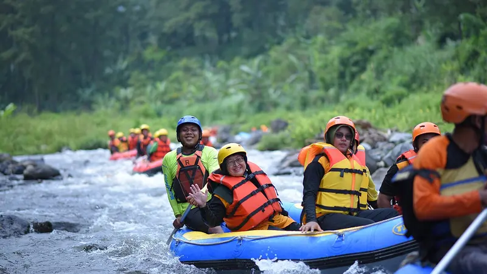

Operator rafting Malang terpercaya ditandai pemandu berpengalaman, perlengkapan keselamatan terawat, briefing wajib, prosedur darurat jelas, serta informasi harga dan rute yang transparan.
- Menurut World Health Organization, tenggelam menyebabkan sekitar 300.000 kematian di dunia pada 2021, sehingga standar keselamatan operator tidak boleh diabaikan.
- Pemandu yang baik menguasai karakter sungai dan teknik penyelamatan.
- Perlengkapan harus terawat dan berukuran sesuai peserta.
- Reputasi, alamat basecamp, dan izin usaha perlu diverifikasi.
- Harga yang jauh di bawah pasar sering menjadi tanda peringatan.
Mengapa Pemilihan Operator Rafting Sangat Penting?
Pemilihan operator rafting penting karena operator menentukan standar keselamatan, kualitas pemandu, dan kesiapan menghadapi keadaan darurat selama peserta berada di sungai.
World Health Organization (WHO) memperkirakan tenggelam menyebabkan sekitar 300.000 kematian di seluruh dunia pada 2021. Angka ini mencakup berbagai penyebab, bukan hanya aktivitas wisata, tetapi tetap menunjukkan bahwa kegiatan di air memerlukan kehati-hatian.
Dalam rafting, peserta bergantung pada operator untuk hal-hal yang tidak dapat mereka nilai sendiri, seperti kondisi debit air dan kelayakan perahu. Pengalaman wisata yang menyenangkan berawal dari keputusan memilih penyedia yang disiplin menerapkan prosedur. Informasi ini bersifat umum dan tidak menggantikan arahan keselamatan resmi dari operator.
Apa Kriteria Pemandu yang Baik?
Pemandu rafting yang baik memahami karakter sungai, mampu memberi aba-aba jelas, menguasai teknik penyelamatan, dan menjelaskan aturan keselamatan sebelum perahu masuk ke air.
Pemandu yang berpengalaman dapat membaca arus, memilih jalur, dan mengantisipasi hambatan seperti batu atau percabangan sungai. Calon peserta dapat menanyakan lama pengalaman pemandu pada rute yang akan dipakai.
Komunikasi juga penting. Pemandu yang baik menggunakan aba-aba singkat dan konsisten, serta menjelaskan apa yang harus dilakukan jika peserta terjatuh. Rasio pemandu terhadap jumlah perahu perlu ditanyakan, terutama untuk rombongan besar atau peserta anak.
Perlengkapan Apa yang Wajib Disediakan Operator?
Operator rafting seharusnya menyediakan pelampung berukuran sesuai, helm, dayung, perahu karet dalam kondisi baik, tali penyelamat, dan perlengkapan pertolongan pertama untuk setiap kelompok.
Pelampung harus pas di badan dan tidak longgar, karena pelampung yang kebesaran dapat terlepas saat peserta terjatuh. Helm perlu melindungi kepala dengan tali pengunci yang berfungsi.
Perahu karet sebaiknya tidak menunjukkan kebocoran, sobekan, atau tambalan yang mencurigakan. Tali penyelamat dan perlengkapan pertolongan pertama menjadi bagian dari kesiapan darurat. Calon peserta berhak melihat kondisi perlengkapan sebelum membayar paket.
Bagaimana Memeriksa Reputasi dan Legalitas Operator?
Reputasi operator rafting dapat diperiksa melalui ulasan peserta, riwayat layanan, kejelasan alamat basecamp, dan izin usaha yang dapat diverifikasi di dinas pariwisata setempat.
Baca ulasan dari beberapa sumber, bukan hanya satu platform, lalu perhatikan pola keluhan yang berulang. Ulasan yang menyebut keselamatan, ketepatan jadwal, dan sikap pemandu lebih informatif daripada ulasan umum.
Operator yang kredibel biasanya memiliki basecamp dengan alamat jelas, kontak yang dapat dihubungi, dan identitas usaha yang terbuka. Jika ragu, calon peserta dapat menanyakan status izin usaha kepada pihak berwenang pariwisata di daerah setempat.
Pertanyaan Apa yang Perlu Diajukan Sebelum Memesan?
Sebelum memesan, calon peserta perlu bertanya tentang rasio pemandu, tingkat arus, batas usia, prosedur darurat, kebijakan pembatalan, dan komponen yang termasuk dalam harga paket.
Tanyakan tingkat arus rute berdasarkan klasifikasi International Rafting Federation, yang membagi sungai menjadi kelas I sampai VI. Jawaban yang spesifik menunjukkan operator memahami rutenya.
Tanyakan pula apa yang terjadi jika hujan deras membuat rute ditunda, apakah ada pengembalian dana atau penjadwalan ulang, dan siapa yang bertanggung jawab pada keadaan darurat. Minta rincian tertulis agar tidak terjadi salah paham di hari kegiatan. Untuk memahami komponen harga, baca juga panduan rincian biaya paket rafting.
Apa Tanda Peringatan Operator yang Perlu Dihindari?
Tanda peringatan operator rafting meliputi tidak ada briefing, pelampung usang, harga jauh di bawah pasar, pemandu tidak menjelaskan rute, dan menolak memberi informasi izin.
Briefing keselamatan yang dilewati demi menghemat waktu adalah tanda serius. Pelampung yang robek, helm retak, atau perahu yang tampak rusak juga alasan kuat untuk membatalkan pesanan.
Waspadai pula operator yang menjanjikan hasil tanpa risiko atau menolak menjawab pertanyaan sederhana. Setelah memilih operator yang tepat, pelajari juga pilihan lokasi di rekomendasi wisata rafting Malang.
FAQ
Apakah operator rafting harus memiliki izin usaha?
Operator rafting yang kredibel sebaiknya memiliki izin usaha yang dapat diverifikasi. Calon peserta dapat menanyakan status izin kepada operator atau memeriksanya melalui dinas pariwisata setempat.
Berapa jumlah pemandu yang ideal dalam satu perahu?
Umumnya satu perahu didampingi satu pemandu, tetapi rasio dapat berbeda menurut rute dan jumlah peserta. Calon peserta sebaiknya menanyakan rasio pemandu sebelum memesan.
Apakah asuransi termasuk dalam paket rafting?
Sebagian operator menyertakan asuransi dasar dalam paket, sedangkan sebagian lain tidak. Calon peserta perlu menanyakan cakupan perlindungan secara tertulis sebelum membayar.
Arya
penulis artikel yang sudah berpengalaman di dalam dunia wisata outbound Batu Malang.